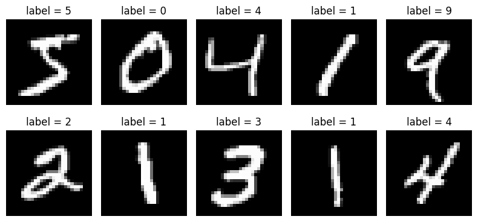
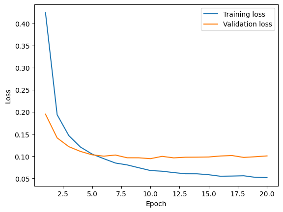
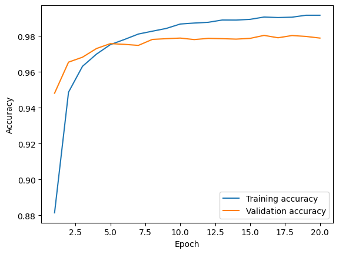
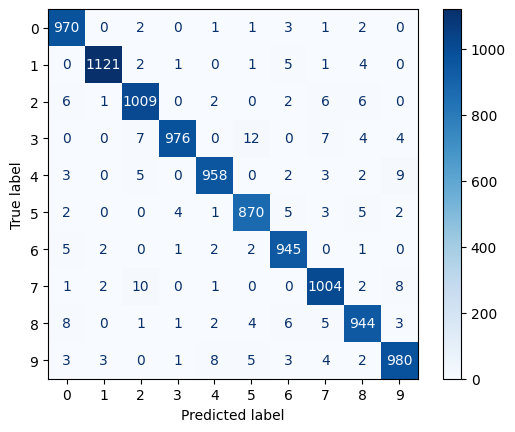
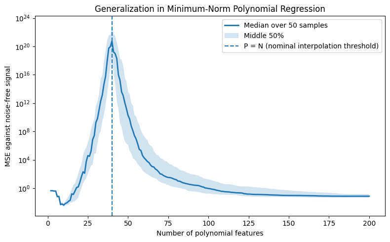
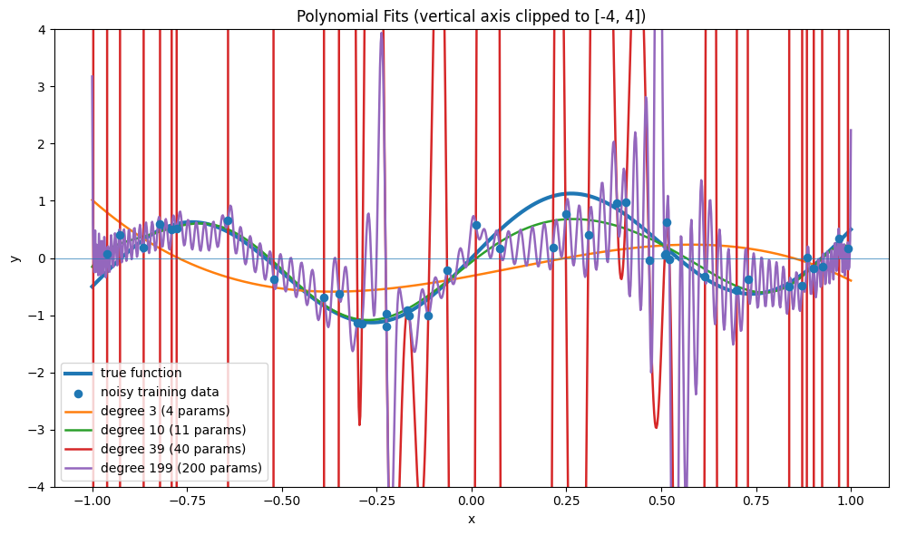

Show code
import numpy as np
import matplotlib.pyplot as plt
import keras
from keras import layers, regularizers
keras.utils.set_random_seed(2026)Warning: AI-assisted materials
These materials were developed with assistance from AI tools. All content has been reviewed and edited by the instructor, who takes final responsibility for its accuracy, clarity, and appropriateness for the course. Students should treat these materials as instructor-reviewed course content while applying the same critical judgment they would use with any technical material. Please report any suspected errors or unclear explanations to ghunt@wm.edu.
We now know how to define a network and compute its gradient. A low training loss is only part of the goal: we want predictions that work on new observations.
This lecture connects architecture and training choices to generalization. We will use regularization and validation in a complete MNIST example, then return to the question of why a model with many parameters can still generalize.
As in Lecture 12, depth \(L\) counts learned layers, including the output layer; width \(d_i\) is the number of units in layer \(i\). A dense layer has
\[ W^{(i)}\in\mathbb R^{d_i\times d_{i-1}},\qquad b^{(i)}\in\mathbb R^{d_i}, \]
so its parameter count is \(d_i(d_{i-1}+1)\): one weight per connection and one bias per output unit.
For \(D=20\) inputs, \(H=50\) hidden units, and one scalar output,
\[ \underbrace{50\cdot20+50}_{\text{hidden layer}} +\underbrace{1\cdot50+1}_{\text{output layer}} =1050+51=1101. \]
Even this small architecture has many more parameters than linear regression on the same inputs.
Regularization changes the fitting procedure to discourage fitting sample-specific noise. We will consider weight penalties, early stopping, dropout, and smaller architectures.
The ridge-style approach adds a penalty on weight size. If we penalize the weight matrices but leave biases unpenalized,
\[ J_\lambda(\theta)=\hat R(\theta)+\frac\lambda2\sum_{i=1}^L\|W^{(i)}\|_F^2, \qquad \|W\|_F^2=\sum_{j,k}W_{jk}^2. \]
The derivative of the penalty for \(W^{(i)}\) is \(\lambda W^{(i)}\). Ordinary gradient descent therefore gives
\[ \begin{aligned} W^{(i)}&\leftarrow W^{(i)}-\eta\left(\nabla_{W^{(i)}}\hat R+\lambda W^{(i)}\right)\\ &=(1-\eta\lambda)W^{(i)}-\eta\nabla_{W^{(i)}}\hat R. \end{aligned} \]
The extra term shrinks weights toward zero, explaining the name weight decay. The same calculation applies to a mini-batch gradient. Increasing \(\lambda\) strengthens the penalty; validation helps choose a useful amount.
We can penalize all weight matrices or selected layers. In the example below, only the first hidden layer’s weights are penalized. Biases are left alone.
Training can keep reducing training loss after improvement on new data has stopped. At that point, further updates may fit noise or peculiarities of the training sample.
Early stopping uses a validation set to choose how long to train:
Patience allows temporary fluctuations rather than stopping at the first increase. The best epoch may be earlier than the stopping epoch. Because validation data choose the epoch, the best validation score is a selection result; reserve the test set for final evaluation.
Suppose a prediction relies heavily on a particular hidden unit. Dropout forces the network to train even when that unit is unavailable: it randomly replaces some hidden activations with zero. For drop probability \(p=0.2\), each activation has a 20% chance of being removed on a training pass.
For one activation \(h_j\), draw a mask
\[ m_j\sim\operatorname{Bernoulli}(1-p),\qquad 0\le p<1. \]
If we simply used \(m_jh_j\), its average would be \((1-p)h_j\). Inverted dropout compensates by scaling the retained activations:
\[ \tilde h_j=\frac{m_jh_j}{1-p}. \]
Treat \(h_j\) as fixed while drawing this mask. Then
\[ \mathbb E_m[\tilde h_j\mid h_j] =\frac{h_j}{1-p}\mathbb E[m_j] =\frac{h_j}{1-p}(1-p)=h_j. \]
For \(p=0.2\), the activation is zero 20% of the time and \(1.25h_j\) otherwise. Its average remains \(h_j\). At prediction time, turn dropout off and use \(h_j\) directly; no extra scaling is needed.
Since \(\operatorname{Var}(m_j)=p(1-p)\),
\[ \operatorname{Var}_m(\tilde h_j\mid h_j) =\frac{h_j^2}{(1-p)^2}\operatorname{Var}(m_j) =\frac{p}{1-p}h_j^2. \]
Larger \(p\) adds more noise. This can discourage fragile dependence on particular units, but too much can make learning difficult and cause underfitting.
Dropout has a regularizing effect because it discourages the network from relying too heavily on any one hidden unit or on fragile combinations of hidden units. Instead, the model is pushed to learn representations that remain useful even when some activations are temporarily removed.
In practice, apply dropout to hidden activations, usually not the final output. Different layers may have different rates. Reuse the forward mask in its backward pass, and disable dropout for validation and prediction.
A smaller architecture restricts the functions available before training begins. Start with a modest network and compare training and validation behavior.
If both performances are poor, check whether optimization is working before adding capacity. If training is good but validation is poor, more capacity alone is unlikely to solve the problem; consider regularization and the data instead.
Poor generalization and unsuccessful optimization are different problems. Training and validation curves help distinguish them.
Mini-batch SGD uses
\[ \theta^{(t+1)}=\theta^{(t)}-\eta g_t, \qquad g_t=\nabla_\theta\hat R_{B_t}(\theta^{(t)}). \]
A very small \(\eta\) can make progress slow; a large one can cause overshooting or divergence. Some fluctuation is normal with mini-batches—look at the overall trend.
A learning-rate schedule changes \(\eta\) during training, often reducing it later. Adaptive optimizers rescale coordinate updates, but still have a base learning rate to choose.
An epoch is one pass through the training observations. Too few epochs may leave the model underfit; further training may eventually hurt validation performance. Early stopping chooses a stopping point using validation data.
The batch size determines how many observations contribute to one update. Smaller batches generally give noisier gradient estimates and more updates per epoch; larger batches require more work per update but can use hardware efficiently. We use 128 below. Keep this distinction in mind when comparing runs by epochs rather than updates.
Random initialization breaks symmetry: hidden units that start identically can receive identical updates and keep learning the same feature. Different starting values can also lead to different fitted solutions in a nonconvex problem.
Scale matters too. Poorly scaled initial weights can make signals or gradients shrink or grow through successive layers. Glorot/Xavier and He/Kaiming initializations choose a scale based on layer dimensions and activation behavior. Standard library defaults provide a starting point; biases can often start at zero.
Neural networks are sensitive to input scale.
If one feature has values near \(0\) and another feature has values in the thousands, gradient-based optimization can become harder. A common preprocessing step is to standardize numerical predictors using the training data:
\[ x_j^{\text{scaled}}= \frac{x_j - \bar{x}_j}{s_j}. \]
The same transformation is then applied to the validation and test sets.
Important point: preprocessing parameters, such as means and standard deviations, should be learned from the training data only. Otherwise, information from the validation or test data can leak into the training process.
Backpropagation supplies \(g_t\). An optimizer decides how to turn it into an update. Basic SGD uses only the current gradient; the following methods also keep information from previous steps.
Starting with \(v_0=0\), one convention is
\[ v_t=\rho v_{t-1}+g_t,\qquad \theta^{(t+1)}=\theta^{(t)}-\eta v_t,\qquad 0\le\rho<1. \]
Repeated agreement between gradients builds a stronger direction. Alternating components can cancel, smoothing noisy updates. The coefficient \(\rho\) controls how much of the previous direction is retained.
Instead of averaging directions, RMSProp tracks gradient sizes coordinate by coordinate. Starting with \(r_0=0\),
\[ r_t=\rho r_{t-1}+(1-\rho)g_t^2,\qquad \theta^{(t+1)}=\theta^{(t)}-\eta\frac{g_t}{\sqrt{r_t}+\epsilon}. \]
Squares, square roots, and division are elementwise. Coordinates with consistently large gradients get scaled down. The small \(\epsilon>0\) prevents division by zero. This gives different effective step sizes to different parameters.
Adam combines a smoothed direction with coordinatewise scaling. Starting both averages at zero,
\[ m_t=\beta_1m_{t-1}+(1-\beta_1)g_t,\qquad r_t=\beta_2r_{t-1}+(1-\beta_2)g_t^2. \]
Ignoring the startup correction for a moment, the schematic update is
\[ \theta^{(t+1)}=\theta^{(t)}-\eta\frac{m_t}{\sqrt{r_t}+\epsilon}. \]
Because these averages start at zero, Adam corrects their initial bias. For updates indexed \(t=1,2,\ldots\),
\[ \hat m_t=\frac{m_t}{1-\beta_1^t},\qquad \hat r_t=\frac{r_t}{1-\beta_2^t},\qquad \theta^{(t+1)}=\theta^{(t)}-\eta\frac{\hat m_t}{\sqrt{\hat r_t}+\epsilon}. \]
The main distinction is what gets remembered: momentum remembers directions, RMSProp remembers squared sizes, and Adam uses both. All three still need backpropagation. We use Adam below; optimizer and learning-rate choices should be compared using validation performance.
MNIST contains grayscale images of handwritten digits, labeled 0 through 9. Each image has \(28\times28=784\) pixels. We will show the images, flatten them, and fit a dense classifier.
Flattening discards the explicit two-dimensional layout; the model does not build in the spatial structure that a convolutional network would use. It lets us apply the feed-forward layers already studied.
Keras supplies the layer definitions, automatic differentiation, and training loop behind a familiar fit / predict interface. We still choose the architecture, loss, regularization, optimizer, and evaluation procedure.
import numpy as np
import matplotlib.pyplot as plt
import keras
from keras import layers, regularizers
keras.utils.set_random_seed(2026)Keras provides a convenient MNIST loader. The data are already split into training and test sets.
(x_train_full0, y_train_full0), (x_test0, y_test0) = keras.datasets.mnist.load_data()
print(x_train_full0.shape)
print(y_train_full0.shape)
print(x_test0.shape)
print(y_test0.shape)(60000, 28, 28)
(60000,)
(10000, 28, 28)
(10000,)Each image is stored as a \(28 \times 28\) array. The labels are integers from \(0\) to \(9\).
fig, axes = plt.subplots(2, 5, figsize=(8, 4))
axes = axes.ravel()
for i in range(10):
axes[i].imshow(x_train_full0[i], cmap="gray")
axes[i].set_title(f"label = {y_train_full0[i]}")
axes[i].axis("off")
plt.tight_layout()
plt.show()
Divide pixel values by 255 to put them in \([0,1]\). This uses the known pixel range, not an estimated statistic. Split the original training data into training and validation portions; the original test set stays separate.
The default below uses all 60,000 original training observations: 48,000 for fitting and 12,000 for validation. n_total can select a smaller stratified sample for a quicker run.
from sklearn.model_selection import train_test_split
n_total = None # None uses all 60,000; e.g. 12000 gives a quicker demo.
val_size = 0.20
indices = np.arange(len(y_train_full0))
if n_total is not None and n_total < len(indices):
indices, _ = train_test_split(
indices, train_size=n_total, stratify=y_train_full0, random_state=2026
)
x_train_full = x_train_full0[indices].astype("float32") / 255.0
y_train_full = y_train_full0[indices]
x_train, x_val, y_train, y_val = train_test_split(
x_train_full, y_train_full, test_size=val_size,
random_state=654654, stratify=y_train_full
)
x_test = x_test0.astype("float32") / 255.0
y_test = y_test0
print("Training:", x_train.shape, y_train.shape)
print("Validation:", x_val.shape, y_val.shape)
print("Test:", x_test.shape, y_test.shape)Training: (48000, 28, 28) (48000,)
Validation: (12000, 28, 28) (12000,)
Test: (10000, 28, 28) (10000,)Keep labels as integers and use sparse categorical cross-entropy. With corresponding one-hot labels, ordinary categorical cross-entropy gives the same loss. “Sparse” describes the label encoding here, not a sparse network.
The sequence is: flatten → 128 ReLU units → dropout → 64 ReLU units → 10 softmax probabilities.
This uses Lecture 12’s probability-output convention: the model returns \(p_\theta(x)\), rather than logits \(s_\theta(x)\). The loss must therefore expect probabilities.
kernel_regularizer penalizes the first hidden weight matrix, not its bias. Keras’s l2(1e-4) adds \(10^{-4}\sum_{j,k}W_{jk}^2\) to the loss; its coefficient corresponds to \(\lambda/2\) in our formula. Keras regularizer documentation.
model = keras.Sequential([
layers.Input(shape=(28, 28)),
layers.Flatten(),
layers.Dense(
128,
activation="relu",
kernel_regularizer=regularizers.l2(1e-4), #l2 regularization
),
layers.Dropout(0.1), #dropout regularization
layers.Dense(64, activation="relu"),
layers.Dense(10, activation="softmax"),
])
model.summary()Model: "sequential"
┏━━━━━━━━━━━━━━━━━━━━━━━━━━━━━━━━━┳━━━━━━━━━━━━━━━━━━━━━━━━┳━━━━━━━━━━━━━━━┓ ┃ Layer (type) ┃ Output Shape ┃ Param # ┃ ┡━━━━━━━━━━━━━━━━━━━━━━━━━━━━━━━━━╇━━━━━━━━━━━━━━━━━━━━━━━━╇━━━━━━━━━━━━━━━┩ │ flatten (Flatten) │ (None, 784) │ 0 │ ├─────────────────────────────────┼────────────────────────┼───────────────┤ │ dense (Dense) │ (None, 128) │ 100,480 │ ├─────────────────────────────────┼────────────────────────┼───────────────┤ │ dropout (Dropout) │ (None, 128) │ 0 │ ├─────────────────────────────────┼────────────────────────┼───────────────┤ │ dense_1 (Dense) │ (None, 64) │ 8,256 │ ├─────────────────────────────────┼────────────────────────┼───────────────┤ │ dense_2 (Dense) │ (None, 10) │ 650 │ └─────────────────────────────────┴────────────────────────┴───────────────┘
Total params: 109,386 (427.29 KB)
Trainable params: 109,386 (427.29 KB)
Non-trainable params: 0 (0.00 B)
Use Adam with base learning rate 0.001 and sparse categorical cross-entropy. Track accuracy as an additional metric: it measures correct classifications rather than probability quality.
model.compile(
optimizer=keras.optimizers.Adam(learning_rate=0.001), #adam with specified lr
loss="sparse_categorical_crossentropy", # actual loss
metrics=["accuracy"], # what we're tracking
)Use mini-batches of 128, at most 100 epochs, and patience 10. Restore the parameters from the best validation epoch. The test set is not involved. Keras EarlyStopping documentation.
early_stopping = keras.callbacks.EarlyStopping(
monitor="val_loss",
patience=10, # how long to wait without improvement
restore_best_weights=True,
)
history = model.fit(
x_train,
y_train,
validation_data=(x_val, y_val),
epochs=100,
batch_size=128,
callbacks=[early_stopping],
verbose=2,
)Epoch 1/100
375/375 - 2s - 4ms/step - accuracy: 0.8814 - loss: 0.4240 - val_accuracy: 0.9481 - val_loss: 0.1949
Epoch 2/100
375/375 - 1s - 2ms/step - accuracy: 0.9487 - loss: 0.1937 - val_accuracy: 0.9654 - val_loss: 0.1413
Epoch 3/100
375/375 - 1s - 2ms/step - accuracy: 0.9631 - loss: 0.1465 - val_accuracy: 0.9682 - val_loss: 0.1216
Epoch 4/100
375/375 - 1s - 2ms/step - accuracy: 0.9699 - loss: 0.1207 - val_accuracy: 0.9730 - val_loss: 0.1108
Epoch 5/100
375/375 - 1s - 2ms/step - accuracy: 0.9752 - loss: 0.1048 - val_accuracy: 0.9758 - val_loss: 0.1032
Epoch 6/100
375/375 - 1s - 2ms/step - accuracy: 0.9780 - loss: 0.0944 - val_accuracy: 0.9753 - val_loss: 0.1001
Epoch 7/100
375/375 - 1s - 3ms/step - accuracy: 0.9811 - loss: 0.0846 - val_accuracy: 0.9747 - val_loss: 0.1027
Epoch 8/100
375/375 - 1s - 2ms/step - accuracy: 0.9827 - loss: 0.0804 - val_accuracy: 0.9781 - val_loss: 0.0965
Epoch 9/100
375/375 - 1s - 2ms/step - accuracy: 0.9842 - loss: 0.0739 - val_accuracy: 0.9785 - val_loss: 0.0964
Epoch 10/100
375/375 - 1s - 3ms/step - accuracy: 0.9867 - loss: 0.0677 - val_accuracy: 0.9788 - val_loss: 0.0945
Epoch 11/100
375/375 - 1s - 2ms/step - accuracy: 0.9872 - loss: 0.0661 - val_accuracy: 0.9780 - val_loss: 0.0997
Epoch 12/100
375/375 - 1s - 2ms/step - accuracy: 0.9876 - loss: 0.0630 - val_accuracy: 0.9787 - val_loss: 0.0963
Epoch 13/100
375/375 - 1s - 2ms/step - accuracy: 0.9889 - loss: 0.0604 - val_accuracy: 0.9785 - val_loss: 0.0977
Epoch 14/100
375/375 - 1s - 2ms/step - accuracy: 0.9889 - loss: 0.0603 - val_accuracy: 0.9783 - val_loss: 0.0979
Epoch 15/100
375/375 - 1s - 2ms/step - accuracy: 0.9893 - loss: 0.0582 - val_accuracy: 0.9787 - val_loss: 0.0983
Epoch 16/100
375/375 - 1s - 2ms/step - accuracy: 0.9906 - loss: 0.0548 - val_accuracy: 0.9803 - val_loss: 0.1005
Epoch 17/100
375/375 - 1s - 2ms/step - accuracy: 0.9903 - loss: 0.0552 - val_accuracy: 0.9790 - val_loss: 0.1015
Epoch 18/100
375/375 - 1s - 2ms/step - accuracy: 0.9905 - loss: 0.0559 - val_accuracy: 0.9803 - val_loss: 0.0973
Epoch 19/100
375/375 - 1s - 2ms/step - accuracy: 0.9916 - loss: 0.0523 - val_accuracy: 0.9797 - val_loss: 0.0988
Epoch 20/100
375/375 - 1s - 2ms/step - accuracy: 0.9916 - loss: 0.0517 - val_accuracy: 0.9788 - val_loss: 0.1007Compare the overall trends: continued training improvement with worsening validation performance suggests overfitting. If neither improves, investigate optimization, scaling, or insufficient capacity.
Here the reported losses include the weight penalty. Training also uses dropout while validation does not, and training metrics accumulate as weights change within the epoch. Thus validation loss can be below training loss; their absolute gap is not a pure measure of overfitting.
history_dict = history.history
epochs = range(1, len(history_dict["loss"]) + 1)
plt.plot(epochs, history_dict["loss"], label="Training loss")
plt.plot(epochs, history_dict["val_loss"], label="Validation loss")
plt.xlabel("Epoch")
plt.ylabel("Loss")
plt.legend()
plt.show()
plt.plot(epochs, history_dict["accuracy"], label="Training accuracy")
plt.plot(epochs, history_dict["val_accuracy"], label="Validation accuracy")
plt.xlabel("Epoch")
plt.ylabel("Accuracy")
plt.legend()
plt.show()

After choosing the architecture, regularization, optimizer, and stopping rule, evaluate the resulting fitted model on the held-out test set. Accuracy measures classification performance; the reported loss includes the weight penalty.
If we use these test results to choose another model, the test set has become part of selection and is no longer an independent final evaluation.
test_loss, test_accuracy = model.evaluate(x_test, y_test, verbose=0)
print(f"Test loss: {test_loss:.4f}")
print(f"Test accuracy: {test_accuracy:.4f}")Test loss: 0.0979
Test accuracy: 0.9777The model outputs a probability vector with \(10\) entries. The predicted class is the digit with the largest predicted probability.
y_prob = model.predict(x_test[:10], verbose=0)
y_pred = np.argmax(y_prob, axis=1)
print("Predicted labels:", y_pred)
print("True labels: ", y_test[:10])Predicted labels: [7 2 1 0 4 1 4 9 5 9]
True labels: [7 2 1 0 4 1 4 9 5 9]fig, axes = plt.subplots(2, 5, figsize=(8, 4))
axes = axes.ravel()
for i in range(10):
axes[i].imshow(x_test[i], cmap="gray")
axes[i].set_title(f"pred={y_pred[i]}, true={y_test[i]}")
axes[i].axis("off")
plt.tight_layout()
plt.show()
We can also look at a confusion matrix:
from sklearn.metrics import confusion_matrix, ConfusionMatrixDisplay
y_prob_test = model.predict(x_test, verbose=0)
y_pred_test = np.argmax(y_prob_test, axis=1)
cm = confusion_matrix(y_test, y_pred_test)
disp = ConfusionMatrixDisplay(confusion_matrix=cm)
disp.plot(cmap="Blues", values_format="d")
plt.show()
The network has
\[ (784+1)128+(128+1)64+(64+1)10=109{,}386 \]
trainable parameters. Flattening and dropout add none. With the default split, that exceeds the 48,000 training observations. Why can such a model still predict new digits well?
Over-parameterization concerns the number of parameters or the ability to interpolate the training sample. Overfitting concerns fitting sample-specific variation at the expense of performance on new observations. Many parameters create the possibility of overfitting, not a guarantee.
When many parameter settings fit the data, the training procedure determines which one we get. Architecture restricts the form of the functions, explicit regularization influences the fit, and optimization can favor particular solutions even without a penalty. This last effect is called implicit bias.
Parameter count is therefore only one part of the generalization story. A linear example makes the role of the selected solution more concrete.
A common bias–variance picture has test error fall and then rise as flexibility increases: first the model captures signal, then it fits more noise. Some problems show an additional decrease after the model becomes flexible enough to fit the training observations exactly. This is double descent.
The transition to exact fitting is the interpolation threshold. Error can rise near this threshold and fall again beyond it. This is a possible pattern, not a rule that bigger models always generalize better.
Consider polynomial regression with design matrix \(\Phi\in\mathbb R^{N\times P}\) and more polynomial features than observations. If \(\Phi\) has full row rank, many coefficient vectors satisfy \(\Phi\beta=y\). The minimum-norm solution chooses
\[ \hat\beta_{\min}=\arg\min_{\beta:\,\Phi\beta=y}\|\beta\|_2^2 =\Phi^+y. \]
This is the ridgeless solution from our regression discussion. Gradient descent on squared loss, initialized at zero and run to convergence with a suitable step size, selects it. A small nonzero initialization can retain a null-space component, so the exact statement requires zero initialization.
The norm is a norm of coefficients in the chosen feature representation. Changing the polynomial basis or its scaling changes which fit is minimum norm. This linear result illustrates implicit bias; it does not establish that neural-network training always finds a minimum-norm solution.
Keep the original signal \(\mu(x)=\sin(2\pi x)+0.5x\), \(N=40\) noisy observations, and Legendre polynomial features. Degree \(d\) gives \(P=d+1\) features; Legendre polynomials span the same degree-\(d\) polynomial space as monomials but use a different basis.
For each of 50 simulated training samples, fit every degree from 1 to 199 using the same sample. Evaluate against the noise-free signal at common test inputs. Plot the median error and the middle 50% of errors across samples. This retains sampling variation and makes comparisons across degrees paired.
High-degree polynomial designs can be numerically ill-conditioned. The pseudoinverse discards sufficiently small singular values, so computed fits need not interpolate exactly even when \(P\ge N\). Treat this as an exploration of the pattern rather than a guaranteed textbook curve.
from numpy.polynomial.legendre import legvander
rng = np.random.default_rng(565)
def f(x):
return np.sin(2 * np.pi * x) + 0.5 * x
def min_norm_poly_fit(x_train, y_train, degree):
Phi = legvander(x_train, degree) # shape: (n, degree + 1)
# Minimum-norm least squares solution
# Works in both underparameterized and overparameterized regimes.
beta = np.linalg.pinv(Phi) @ y_train
return beta
def predict(x, beta):
degree = len(beta) - 1
Phi = legvander(x, degree)
return Phi @ betan_train = 40
n_test = 5000
noise_sd = 0.1
degrees = np.arange(1, 200)
n_trials = 50
# The polynomial experiment is separate from the MNIST arrays above.
x_poly_test = rng.uniform(-1, 1, n_test)
y_poly_true = f(x_poly_test)
Phi_test_all = legvander(x_poly_test, degrees.max())
trial_errors = np.empty((n_trials, len(degrees)))
for trial in range(n_trials):
x_poly_train = rng.uniform(-1, 1, n_train)
y_poly_train = f(x_poly_train) + rng.normal(0, noise_sd, n_train)
Phi_train_all = legvander(x_poly_train, degrees.max())
for j, degree in enumerate(degrees):
Phi = Phi_train_all[:, :degree + 1]
beta = np.linalg.pinv(Phi) @ y_poly_train
y_pred_poly = Phi_test_all[:, :degree + 1] @ beta
trial_errors[trial, j] = np.mean((y_pred_poly - y_poly_true) ** 2)
test_errors = np.median(trial_errors, axis=0)
error_low, error_high = np.quantile(trial_errors, [0.25, 0.75], axis=0)plt.figure(figsize=(8, 5))
plt.plot(degrees + 1, test_errors, linewidth=2, label="Median over 50 samples")
plt.fill_between(degrees + 1, error_low, error_high, alpha=0.2, label="Middle 50%")
plt.axvline(
n_train,
linestyle="--",
label="P = N (nominal interpolation threshold)"
)
plt.yscale("log")
plt.xlabel("Number of polynomial features")
plt.ylabel("MSE against noise-free signal")
plt.title("Generalization in Minimum-Norm Polynomial Regression")
plt.legend()
plt.tight_layout()
plt.show()
The curve falls at first, rises sharply near \(P=N\), then falls again. The largest models still have more error than the best smaller models. Notice the logarithmic scale: the peak represents enormous errors, not a small loss of accuracy.
The spread across repeated samples matters: a median curve does not describe every training set. The vertical line marks \(P=N\), not a guarantee of numerical interpolation. The following plot compares several degrees on one shared noisy sample. Its vertical range is clipped so extreme oscillations do not hide the data.
n_train = 40
noise_sd = 0.25
x_poly_poly_train = rng.uniform(-1, 1, n_train)
y_poly_train = f(x_poly_poly_train) + rng.normal(0, noise_sd, n_train)
x_grid = np.linspace(-1, 1, 1000)
y_true = f(x_grid)
# Number of parameters = degree + 1.
# Interpolation threshold is roughly degree + 1 = n_train.
degrees_to_plot = [3, 10, n_train - 1, 199]
# ----------------------------
# Plot interpolators
# ----------------------------
plt.figure(figsize=(10, 6))
plt.plot(
x_grid,
y_true,
linewidth=3,
label="true function"
)
plt.scatter(
x_poly_poly_train,
y_poly_train,
s=35,
zorder=5,
label="noisy training data"
)
for degree in degrees_to_plot:
beta = min_norm_poly_fit(x_poly_poly_train, y_poly_train, degree)
y_hat = predict(x_grid, beta)
plt.plot(
x_grid,
y_hat,
linewidth=1.8,
label=f"degree {degree} ({degree + 1} params)"
)
plt.axhline(0, linewidth=0.5)
plt.ylim(-4, 4) # Extreme excursions are clipped in this view.
plt.xlabel("x")
plt.ylabel("y")
plt.title("Polynomial Fits (vertical axis clipped to [-4, 4])")
plt.legend()
plt.tight_layout()
plt.show()
See: Chapter 33.